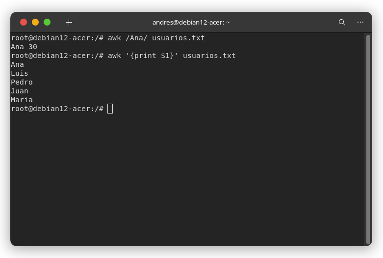

ACTIVIDAD 1
Tarea 1 - Filtrado y redireccionamiento
grep "error" /var/log/syslog > errores.log
Tarea 2 - Procedimiento con Pipelines
cat errores.log | wc -l
Tarea 3 - Orden y filtrado avanzado
grep "fecha_actual" errores.log | sort > errores_ordenados.log
1. ¿Qué comando fue más útil para esta tarea?
El comando más útil fue grep. Nos permitió filtrar rápidamente los datos.
2. ¿Cómo facilita el redireccionamiento y el uso de pipelines el procesamiento de datos en logs grandes?
Facilita de una manera abismal. Evita crear multiples archivos temporales y todo el procesamiento se puede hacer en una sola línea de código, tan solo con escribir un carárter más.
ACTIVIDAD 2
Tarea 1 - Actualización de la lista de paquetes
sudo apt update

# Como hay paquetes por actualizar
sudo
apt
upgrade

Tarea 2 - Instalación de paquetes
sudo apt install vim

vim --version # verificar instalación

Tarea 3 - Eliminacón de paquetes
sudo apt remove vim

# Borramos el paquete innecesario
sudo
apt
autoremove
Tarea 4 - Instalación de herramientas específicas
apt install curl curl -0 http://ejemplo.com/archivo.txt
1. ¿Por qué es importante actualizar una lista de paquetes antes de una instalación?
Para mantener el sistema actualizado y seguro, evitar errores con la instalación y porque así nos puede funcionar mejor.
2. ¿Qué ventajas tiene desinstalar paquetes innecesarios del sistema?
Nos ahorra espacio, nos mantiene libre de posibles amenazas y mantiene limpio nuestro sistema.
OTROS COMANDOS
Alternativas a Grep
awk
Funciona tal cual que grep. Pero además puede filtrar, formatear y procesar columnas.
Recibe como argumento la palabra o patrón que deseas buscar entre medio de barras inclinadas "/".
awk "/Ana/" usuarios.txt
Puedes filtar por columnas utilizando '{print $1}' como argumento.
Puede ser '{print $2}' para la segunda columna (palabra) de cada línea y así sucesivamente.
awk '{print $1}' usuarios.txt
